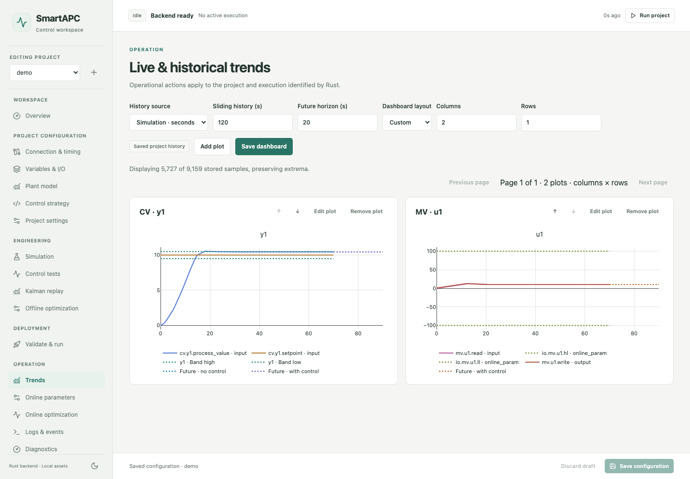
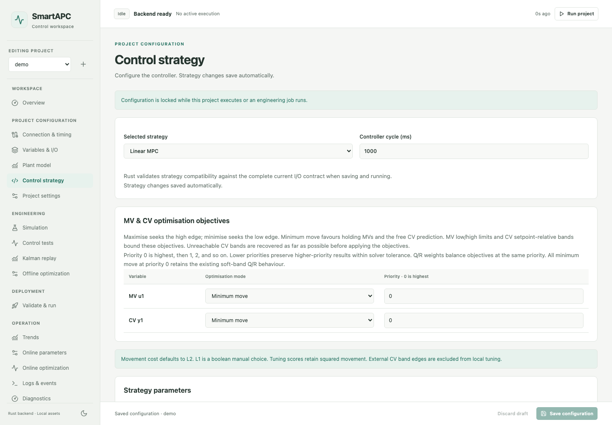
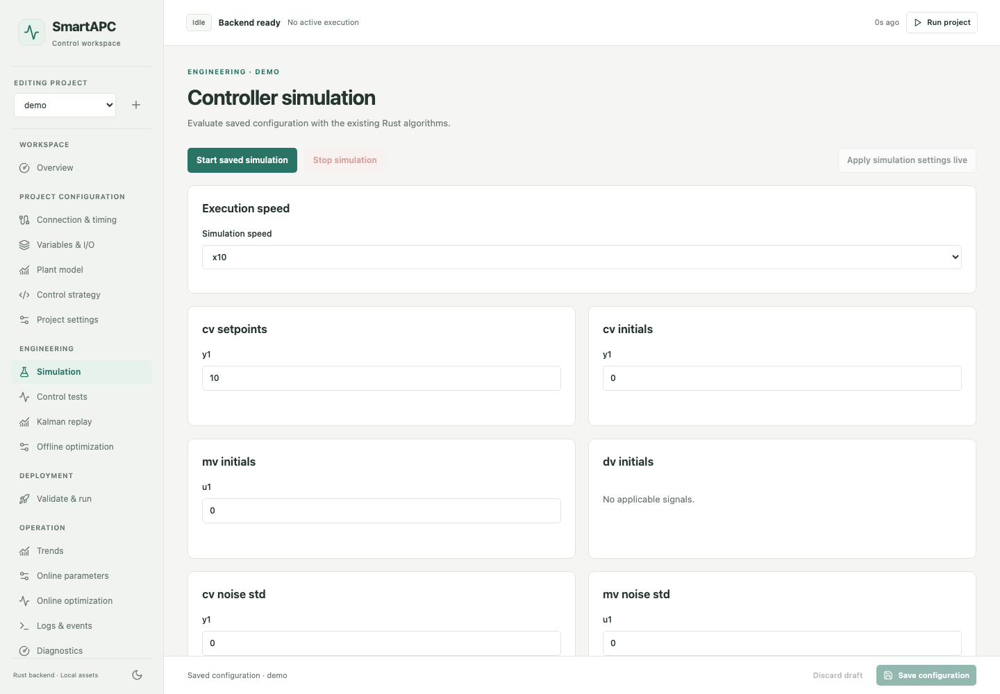
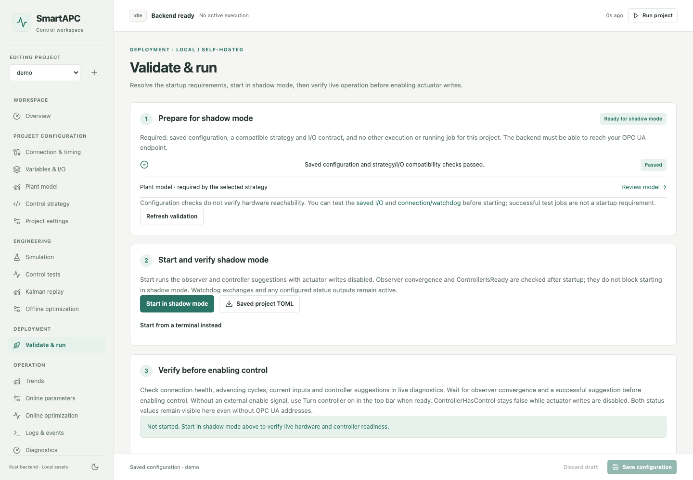

Give your process a structure.
Define manipulated, controlled, and disturbance variables, plus typed numeric and Boolean custom signals. Import I/O and A/B/C/D plant models from validated CSV files.
Local software. Industrial control.
From your first plant model to live process control. Configure, simulate, tune, and operate in one browser workspace, powered by Rust.

01 / One connected workflow
Keep the model, controller, and process in view. Move between configuration, engineering, deployment, and operation without changing tools.
Define manipulated, controlled, and disturbance variables, plus typed numeric and Boolean custom signals. Import I/O and A/B/C/D plant models from validated CSV files.
Start with a P controller, use Linear MPC with Kalman estimation, or build a custom Rust strategy. Match every strategy to the current I/O contract before execution.
Run model-based simulations, control function tests, historical Kalman replay, and offline parameter optimization. Engineering jobs and reports persist with the project.
Set per-variable maximize, minimize, or minimum-move objectives and priorities. Select L1 or L2 MV movement costs, with hard MV limits and soft CV target bands.
Build multi-panel dashboards with measurements and forecasts. Inspect structured logs and diagnostics, edit eligible online parameters, and run online tuning within configured safety boundaries.
Validate saved configuration and begin in shadow mode. Verify observer convergence and controller readiness before manually enabling actuator writes or using an optional external enable signal.
02 / Inside the workspace
These images come from the actual SmartAPC browser application, using the included single-input, single-output MPC demo. Click any image to inspect it at full size.



Demo images show a simulated process, not a connected production plant. This website is a static showcase; the controller runs in your local SmartAPC installation.
03 / Built to stay local
Closing a browser leaves execution and engineering jobs running. Project configuration stays in TOML, with SQLite history and structured JSONL logs.
Configuration · charts · engineering
Controller · jobs · history · watchdog
Plant I/O or included virtual hardware
Independent timing. Separate communication, I/O, and controller cycles.
Packaged assets. Charts, scripts, and styles are served locally.
Open source. Inspect and extend the code under Apache 2.0.
04 / Get hands-on
Build SmartAPC locally with Rust and Node.js 22+. Start with the included demo project and virtual hardware, then explore your own process.
Read the setup guide# Build the browser workspace
cd frontend
npm ci
npm run build
cd ..
# Start the local Rust backend
cargo run -- serve --project-root ./projectsThen open http://127.0.0.1:8080